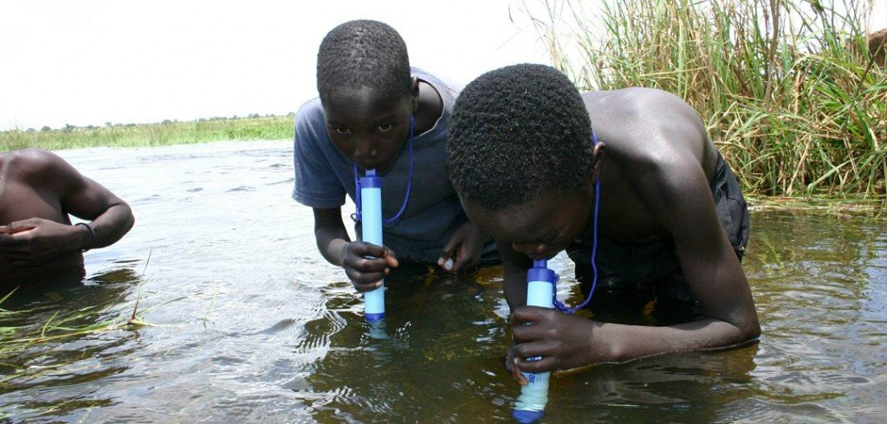

Food and water borne illness, often referred to as food poisoning, is generally caused by eating or drinking food or beverages contaminated by bacteria, parasites or viruses. These organisms are passed in the feces of animals and infected people. Symptoms of food or water borne illness are gastrointestinal, for example diarrhea and stomach cramps.
You can also get sick from swimming in contaminated water or from close contact with someone else who is ill.Certain groups are at increased risk of developing serious complications. These include: pregnant women, young children, seniors, anyone with an underlying medical condition, and anyone with a weakened immune system such as those on chemotherapy.